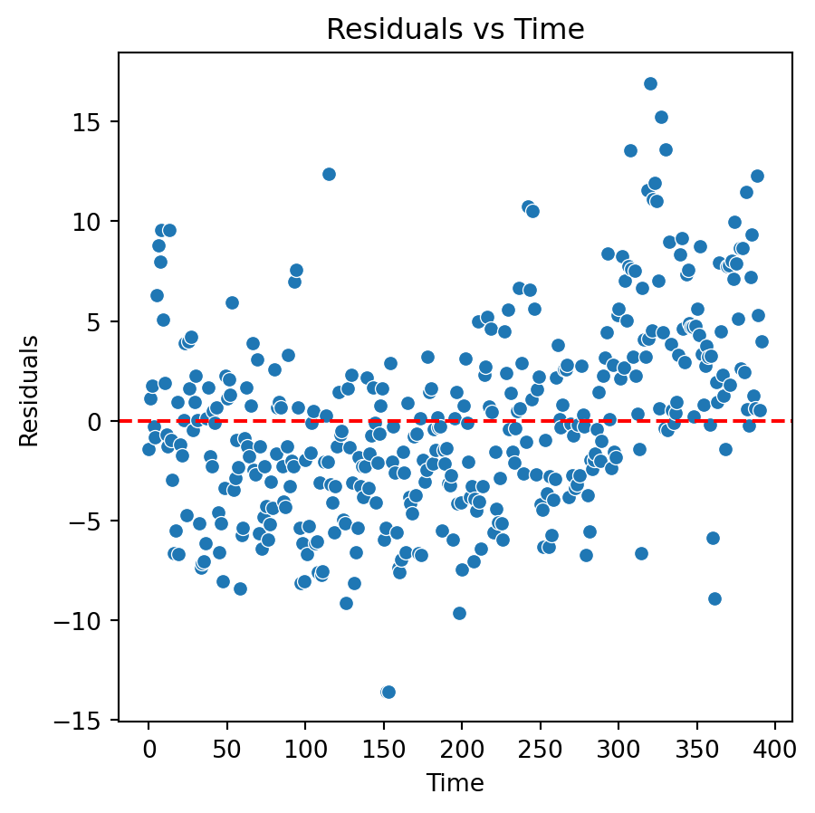
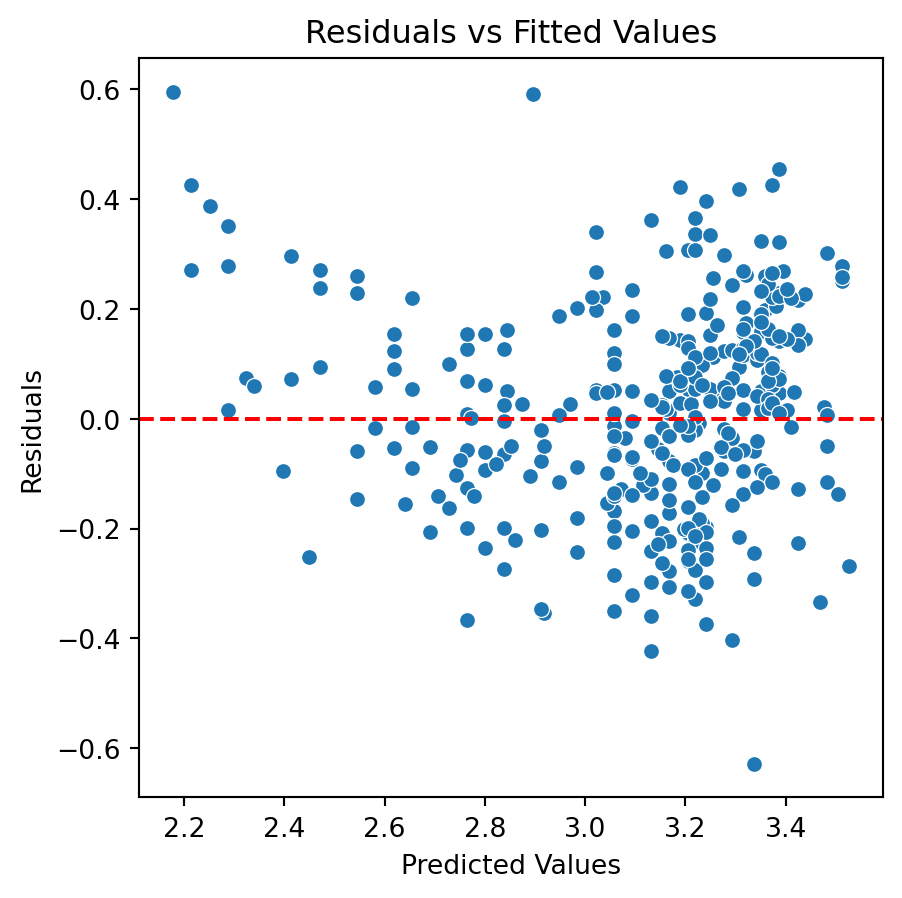
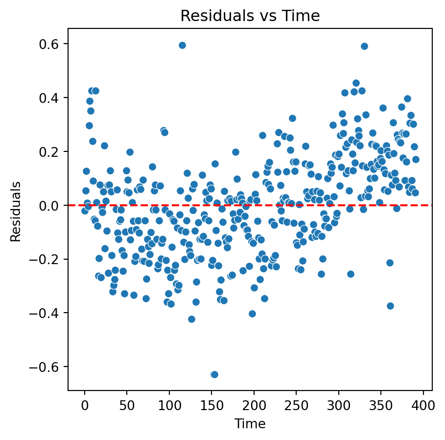
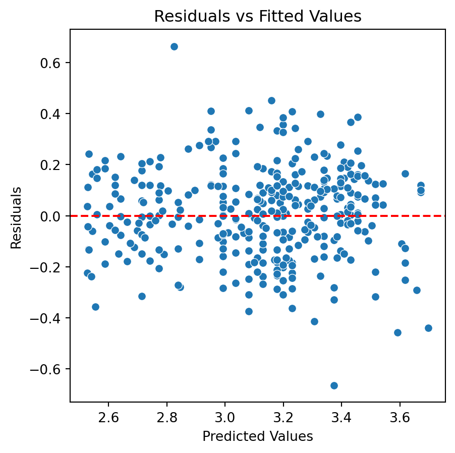

# Importing necessary libraries
import pandas as pd
import seaborn as sns
import matplotlib.pyplot as plt
from sklearn.preprocessing import StandardScaler
import statsmodels.api as smAdditional Topics
IN1002B: Introduction to Data Science Projects
Agenda
- Linear models with categorical variables
- Linear models with standardized numerical predictors
- Remedies for faulty assumptions
Load the libraries
Let’s import scikit-learn into python together with the other relevant libraries.
We will not use all the functions from the scikit-learn library. Instead, we will use specific functions from the sub-libraries model_selection, linear_model, and metrics.
Linear models with categorical predictors
Categorical predictors
- A categorical predictor takes on values that are names or labels.
- Their use in regression requires dummy variables, which are quantitative variables.
- When a categorical variable has more than two levels, a single dummy variable cannot represent all possible values.
- In general, a categorical variable with \(k\) categories requires \(k-1\) dummy variables.
Dummy coding
Traditionally, dummy variables are binary variables which can only take the values 0 and 1.
This approach implies a reference category. Specifically, the category that results when all dummy variables equal 0.
This coding impacts the interpretation of the model coefficients:
- \(\beta_0\) is the mean response under the reference category.
- \(\beta_j\) is the amount of increase in the mean response when we change from the reference category to another category.
Example 1
The auto data set includes a categorical variable “Origin” which shows the origin of each car.
# Load the Excel file into a pandas DataFrame.
auto_data = pd.read_excel("auto.xlsx")
# Set categorical variables.
auto_data['origin'] = auto_data['origin'].astype('category')Dataset
# Show dataset.
auto_data[['mpg', 'origin']].head(6)| mpg | origin | |
|---|---|---|
| 0 | 18.0 | American |
| 1 | 15.0 | American |
| 2 | 18.0 | American |
| 3 | 16.0 | American |
| 4 | 17.0 | American |
| 5 | 15.0 | American |
Dummy variables
This variable has 3 categories: European, American, Japanese.
2 dummy variables are required:
\[d_1 = \begin{cases} 1 \text{ if car is European}\\ 0 \text{ if car is not European} \end{cases} \text{ and }\]
\[d_2 = \begin{cases} 1 \text{ if car is Japanese}\\ 0 \text{ if car is not Japanese} \end{cases}.\]
“American” acts as the reference category.
The multiple linear regression model
\[Y_i= \beta_0+\beta_1 d_{1i} +\beta_2 d_{2i} +\epsilon_i \ \text{for} \ i=1,\ldots,n.\]
- \(Y_i\) is the i-th response.
- \(d_{1i}\) is 1 if the i-th observation is from a European car, and 0 otherwise.
- \(d_{2i}\) is 1 if the i-th observation is from a Japanese car, and 0 otherwise.
Model coefficients
\[Y_i= \beta_0+\beta_1 d_{1i} +\beta_2 d_{2i} +\epsilon_i \ \text{for} \ i=1,\ldots,n.\]
- \(\beta_0\) is the mean response (mpg) for American cars.
- \(\beta_1\) is the amount of increase in the mean response when changing from an American to a European car.
- \(\beta_2\) is the amount of increase in the mean response when changing from an American to a Japanese car.
- \(\epsilon_i\)’s follow the same assumptions as before.
Alternatively, we can write the regression model as:
\[y_i= \beta_0+\beta_1 d_{1i} +\beta_2 d_{2i} +\epsilon_i = \begin{cases} \beta_0+\beta_1 +\epsilon_i \text{ if car is European}\\ \beta_0+\beta_2 +\epsilon_i \text{ if car is Japanese} \\ \beta_0 +\epsilon_i\;\;\;\;\;\;\ \text{ if car is American} \end{cases}\]
Given this model representation:
- \(\beta_0\) is the mean mpg for American cars,
- \(\beta_1\) is the difference in the mean mpg between European and American cars, and
- \(\beta_2\) is the difference in the mean mpg between Japanese and American cars.
In python
We follow three steps to fit a linear model with a categorical predictor. First, we compute the dummy variables.
# Create linear regression object
dummy_data = pd.get_dummies(auto_data['origin'], drop_first = True,
dtype = 'int')
dummy_data.head()Next, we construct the matrix of predictors with the intercept.
# Create linear regression object
dummy_X_train = sm.add_constant(dummy_data)
dummy_X_trainFinally, we fit the model using OLS() and fit() from statsmodels.
# Create linear regression object
regr = sm.OLS(auto_data['mpg'], dummy_X_train)
# Train the model using the training sets
linear_model = regr.fit()
# Summary of the models.
linear_model.summary()| Dep. Variable: | mpg | R-squared: | 0.332 |
| Model: | OLS | Adj. R-squared: | 0.328 |
| Method: | Least Squares | F-statistic: | 96.60 |
| Date: | Sun, 27 Oct 2024 | Prob (F-statistic): | 8.67e-35 |
| Time: | 15:45:21 | Log-Likelihood: | -1282.2 |
| No. Observations: | 392 | AIC: | 2570. |
| Df Residuals: | 389 | BIC: | 2582. |
| Df Model: | 2 | ||
| Covariance Type: | nonrobust |
| coef | std err | t | P>|t| | [0.025 | 0.975] | |
| const | 20.0335 | 0.409 | 49.025 | 0.000 | 19.230 | 20.837 |
| European | 7.5695 | 0.877 | 8.634 | 0.000 | 5.846 | 9.293 |
| Japanese | 10.4172 | 0.828 | 12.588 | 0.000 | 8.790 | 12.044 |
| Omnibus: | 26.330 | Durbin-Watson: | 0.763 |
| Prob(Omnibus): | 0.000 | Jarque-Bera (JB): | 30.217 |
| Skew: | 0.679 | Prob(JB): | 2.74e-07 |
| Kurtosis: | 3.066 | Cond. No. | 3.16 |
Notes:
[1] Standard Errors assume that the covariance matrix of the errors is correctly specified.
Analysis of covariance
Models that mix categorical and numerical predictors are sometimes referred to as analysis of covariance (ANCOVA) models.
Example (cont): Consider the predictor weight (\(X\)).
\[Y_i= \beta_0+\beta_1 d_{1i} +\beta_2 d_{2i} + \beta_3 X_{i} +\epsilon_i,\]
where \(X_i\) denotes the i-th observed value of weight and \(\beta_3\) is the coefficient of this predictor.
ANCOVA model
The components of the ANCOVA model are individual functions of the parameters.
To gain insight into the model, we write it as follows:
\[ \begin{align} y_i &= \beta_0+\beta_1 d_{1i} +\beta_2 d_{2i} + \beta_3 x_{i} +\epsilon_i \\ &= \begin{cases} y_i= (\beta_0+\beta_1) + \beta_3 x_{i} +\epsilon_i \text{ if car is European} \\ y_i= (\beta_0+\beta_2) + \beta_3 x_{i} +\epsilon_i \text{ if car is Japanese} \\ y_i= \beta_0 + \beta_3 x_{i} +\epsilon_i\;\;\;\;\;\;\;\;\ \text{ if car is American} \end{cases}. \end{align} \]
Note that these models have different intercepts but the same slope.
- To estimate \(\beta_0\), \(\beta_1\), \(\beta_2\) and \(\beta_3\), we use least squares. To estimate \(\sigma^2\), we use the mean squared error (MSE).
- We could make individual inferences on \(\beta_1\) and \(\beta_2\) using t-tests and confidence intervals.
- However, better tests are possible such as overall and partial F-tests (not discussed here).
In python
To fit an ANCOVA model, we use similar steps as before. The only new step is to concatenate the data with the dummy variables and the numerical predictor using the function concat() from pandas.
# Concatenate the two data sets.
X_train = pd.concat([dummy_X_train, auto_data['weight']], axis = 1)
# Create linear regression object
regr = sm.OLS(auto_data['mpg'], X_train)
# Train the model using the training sets
ancova_model = regr.fit()Model summary
# Summary of the models.
ancova_model.summary()| Dep. Variable: | mpg | R-squared: | 0.702 |
| Model: | OLS | Adj. R-squared: | 0.700 |
| Method: | Least Squares | F-statistic: | 304.7 |
| Date: | Sun, 27 Oct 2024 | Prob (F-statistic): | 1.28e-101 |
| Time: | 15:45:21 | Log-Likelihood: | -1123.9 |
| No. Observations: | 392 | AIC: | 2256. |
| Df Residuals: | 388 | BIC: | 2272. |
| Df Model: | 3 | ||
| Covariance Type: | nonrobust |
| coef | std err | t | P>|t| | [0.025 | 0.975] | |
| const | 43.7322 | 1.113 | 39.277 | 0.000 | 41.543 | 45.921 |
| European | 0.9709 | 0.659 | 1.474 | 0.141 | -0.324 | 2.266 |
| Japanese | 2.3271 | 0.665 | 3.501 | 0.001 | 1.020 | 3.634 |
| weight | -0.0070 | 0.000 | -21.956 | 0.000 | -0.008 | -0.006 |
| Omnibus: | 40.731 | Durbin-Watson: | 0.832 |
| Prob(Omnibus): | 0.000 | Jarque-Bera (JB): | 61.938 |
| Skew: | 0.689 | Prob(JB): | 3.55e-14 |
| Kurtosis: | 4.377 | Cond. No. | 1.83e+04 |
Notes:
[1] Standard Errors assume that the covariance matrix of the errors is correctly specified.
[2] The condition number is large, 1.83e+04. This might indicate that there are
strong multicollinearity or other numerical problems.
Linear models with standardized predictors
Standardization
Standardization refers to centering and scaling each numeric predictor individually.
To center a predictor variable, the average predictor value is subtracted from all the values.
To scale a predictor, each of its value is divided by its standard deviation.
In mathematical terms, we standardize a predictor \(X\) as:
\[{\color{blue} \tilde{X}_{i}} = \frac{{ X_{i} - \bar{X}}}{ \sqrt{\frac{1}{n -1} \sum_{i=1}^{n} (X_{i} - \bar{X})^2 }} \text{ with } \bar{X} = \sum_{i=1}^n \frac{X_i}{n}.\]
The average value of \(\tilde{X}\) is 0.
The standard deviation of \(\tilde{X}\) is 1.
Benefits and limitations
Benefits:
- All quantitative predictors are on the same scale.
- Size and importance of linear regression coefficients can be compared easily.
. . .
Limitations:
- The interpretation of the coefficients is affected.
Interpretation
\[f(\tilde{\boldsymbol{X}}) = \beta_0 + \beta_1 \tilde{X}_1 + \beta_2 \tilde{X}_2 + \cdots + \beta_p \tilde{X}_p,\]
where \(\tilde{X}_i\) is the standardized version of the predictor \(x_i\).
Interpretation:
- \(\beta_0\) is the mean response when all predictors \(X_1, X_2, \ldots, X_p\) are set to their average value.
- \(\beta_j\) is the amount of increase in the mean response by an increase of 1 standard deviation in the predictor \(x_j\), when all other predictors are fixed to an arbitrary value.
Example 2
The yield of a chemical process (\(Y\)) is related to the concentration of the reactant (\(X_1\)) and the operating temperature (\(X_2\)).
An experiment was conducted to study the effect between these factors on the yield.
The dataset is in the file “catalyst.xlsx”.
The units of concentration and temperature are percentages and Farenheit degrees, respectively.
catalyst_data = pd.read_excel("catalyst.xlsx")
print(catalyst_data) Order Yield Concentration Temperature
0 1 90 2 180
1 2 91 2 180
2 3 84 2 150
3 4 89 1 180
4 5 83 2 150
5 6 79 1 150
6 7 81 1 150
7 8 87 1 180Standarization in python
Recall that we standardize numerical predictors using the scaler() function from scikit-learn.
# Select predictor matrix.
predictor_data = catalyst_data[['Concentration', 'Temperature']]
# Define the scaling operator.
scaler = StandardScaler()
# Apply the scaling operator.
Xs_training = scaler.fit_transform(predictor_data)Now the predictors are on the same scale
print( Xs_training )[[ 1. 1.]
[ 1. 1.]
[ 1. -1.]
[-1. 1.]
[ 1. -1.]
[-1. -1.]
[-1. -1.]
[-1. 1.]]To fit the model, we follow the same functions as before.
# Create linear regression object
std_regr = sm.OLS(catalyst_data['Yield'], Xs_training)
# Train the model using the training sets
std_linear_model = regr.fit()
# Summary of the model.
std_linear_model.summary()| Dep. Variable: | mpg | R-squared: | 0.702 |
| Model: | OLS | Adj. R-squared: | 0.700 |
| Method: | Least Squares | F-statistic: | 304.7 |
| Date: | Sun, 27 Oct 2024 | Prob (F-statistic): | 1.28e-101 |
| Time: | 15:45:21 | Log-Likelihood: | -1123.9 |
| No. Observations: | 392 | AIC: | 2256. |
| Df Residuals: | 388 | BIC: | 2272. |
| Df Model: | 3 | ||
| Covariance Type: | nonrobust |
| coef | std err | t | P>|t| | [0.025 | 0.975] | |
| const | 43.7322 | 1.113 | 39.277 | 0.000 | 41.543 | 45.921 |
| European | 0.9709 | 0.659 | 1.474 | 0.141 | -0.324 | 2.266 |
| Japanese | 2.3271 | 0.665 | 3.501 | 0.001 | 1.020 | 3.634 |
| weight | -0.0070 | 0.000 | -21.956 | 0.000 | -0.008 | -0.006 |
| Omnibus: | 40.731 | Durbin-Watson: | 0.832 |
| Prob(Omnibus): | 0.000 | Jarque-Bera (JB): | 61.938 |
| Skew: | 0.689 | Prob(JB): | 3.55e-14 |
| Kurtosis: | 4.377 | Cond. No. | 1.83e+04 |
Notes:
[1] Standard Errors assume that the covariance matrix of the errors is correctly specified.
[2] The condition number is large, 1.83e+04. This might indicate that there are
strong multicollinearity or other numerical problems.
Discussion
Standardization of predictors has no impact on the overall quality of the linear regression model.
- \(R^2\) and adjusted \(R^2\) statistics are identical.
- Predictions are identical.
- Residuals do not change.
. . .
Standardization does not affect the correlation between two predictors. So, it has not effect on collinearity.
. . .
Ideally, the dummy variables for the categorical predictors are standardized too.
Remedies for faulty assumptions
Incorrect model
A model is incorrect if
- The assumed model structure is incorrect. That is, \(Y \neq \beta_0 + \beta_1 X + \epsilon\).
- The residuals do not have constant variance.
- The residuals are not independent.
Example
Consider the fitting the following model to the auto_data:
\[Y_i = \beta_0 + \beta_1 X_{i} + \epsilon_i\] where:
- \(Y_i\) is the mpg of the i-th car.
- \(X_i\) is the horsepower of the i-th car.
We fit the model:
X_train = sm.add_constant(auto_data['horsepower'])
regr = sm.OLS(auto_data['mpg'], X_train)
linear_model = regr.fit()Residual analysis


Remedies
The assumed model structure is incorrect. That is, \(Y \neq \beta_0 + \beta_1 X + \epsilon\).
Remedies: Add high powers of the predictor variable to the model or transform the response (or predictor).
. . .
The residuals of the fitted model do not have constant variance.
Remedies: Transform the response or predictor variable.
- Logarithm transformation
- Square root transformation
Transformations
Two commonly used transformations are:
Natural logarithm (ln) \[\ln(Y) = \beta_0 + \beta_1 X + \epsilon\] \[\ln(Y) = \beta_0 + \beta_1 \ln(X) + \epsilon\]
Squared root (sqrt)
\[\sqrt{Y} = \beta_0 + \beta_1 X + \epsilon\] \[\sqrt{Y} = \beta_0 + \beta_1 \sqrt{X} + \epsilon\]
Effect of transformations
- In many cases, the \(\ln{(\cdot)}\) transformation Improves the relationship between predictor and response.
- Produces residuals that have constant variance (variance-stabilizing transformation).
- The \(\sqrt{\cdot}\) transformation provides similar benefits, except that
- It is useful for response variables that are counts or follow a Poisson distribution.
pandas library
- pandas is a powerful, open-source data manipulation and analysis library for python
- It simplifies data cleaning, transformation, and analysis tasks
- It is the backbonescikit-learn and pandas
- https://numpy.org/

import numpy as npExample 3
To transform the response (\(Y\)) using \(\ln{(Y)}\) or \(\sqrt{(Y)}\) we use the functions log() and sqrt(), respectively, from numpy.
sqrt_Y = np.sqrt( auto_data['mpg'] )
log_Y = np.log( auto_data['mpg'] )Let’s consider the logarithm transformation. The model then is:
\[\log{(Y_i)} = \beta_0 + \beta_1 X_i +\epsilon_i,\]
which we fit using the code below.
log_regr = sm.OLS(log_Y, X_train)
log_linear_model = log_regr.fit()New residual analysis


Quadratic model
Although there is an improvement in the Residuals vs Fitted Values plot when using the logarithm. The two plots suggests that we are missing a term in the model.
. . .
In fact, a better model for the data is a quadratic model with the logarithm of the response.
\[\log{(Y_i)} = \beta_0 + \beta_1 X_i + \beta_2 X_i^2 +\epsilon_i\]
To fit this model to the data, we construct a new predictor matrix.
X_quad = pd.concat([X_train, auto_data['horsepower']**2], axis = 1)Next, we fit the model as before.
quad_regr = sm.OLS(log_Y, X_quad)
quadratic_model = quad_regr.fit()And calculate the residuals and predicted values.
Y_pred = quadratic_model.fittedvalues
residuals = quadratic_model.residResidual analysis of quadratic model
Code
# Residual vs Fitted Values Plot
plt.figure(figsize=(5, 5))
sns.scatterplot(x = Y_pred, y = residuals)
plt.axhline(y=0, color='red', linestyle='--')
plt.title('Residuals vs Fitted Values')
plt.xlabel('Predicted Values')
plt.ylabel('Residuals')
plt.show()
Code
# Residual vs Fitted Values Plot
plt.figure(figsize=(5, 5))
order = range(residuals.shape[0])
sns.scatterplot(x = order, y = residuals)
plt.axhline(y=0, color='red', linestyle='--')
plt.title('Residuals vs Time')
plt.xlabel('Time')
plt.ylabel('Residuals')
plt.show()
Conclusions
Transformations may help us to develop models that better approximate the data. However, the interpretation of these models may be too complex. For instance, how can you interpret \(\beta_1\) in \(\log{(Y)} = \beta_0 + \beta_1\ X + \epsilon\)?
Therefore, transformations are more useful to build good predictive models. That is, models whose goal is to give accurate predictions of future observations.
Note that, we need to transform back our response predictions to the original scale. For example, if \(Y' = \ln{Y}\) is the transformed response, then our final prediction is \(Y^\star = e^{{Y'}^\star}\).